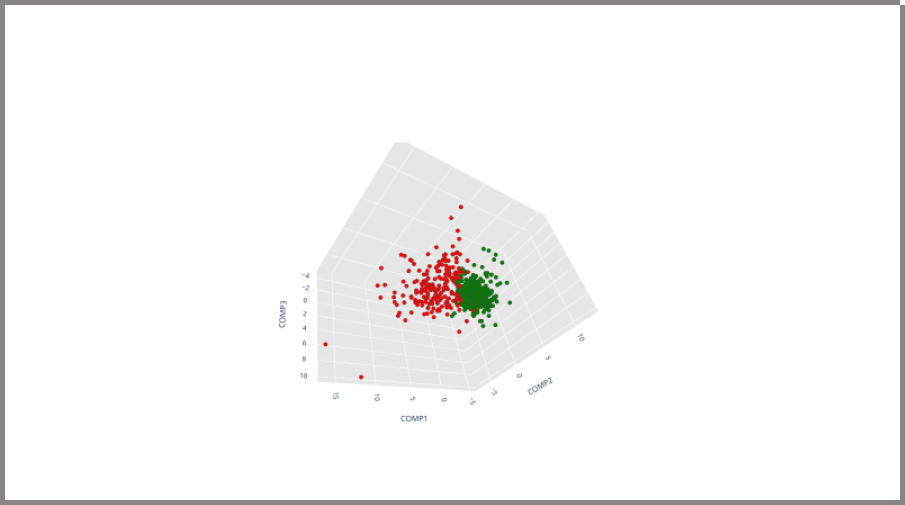

<!DOCTYPE html>
<html lang="en"><!-- Basic -->
<head>
	<meta charset="utf-8">
    <meta http-equiv="X-UA-Compatible" content="IE=edge">
    <!-- Mobile Metas -->
    <meta name="viewport" content="width=device-width, initial-scale=1">
     <!-- Site Metas -->
    <title>Breast Cancer Prediction - FYP PJ21CS02</title>
    <meta name="keywords" content="Breast cancer prediction">
    <meta name="description" content="A small project website for our FYP">
    <meta name="author" content="PJ21CS02">

    <!-- Site Icons -->
    <link rel="shortcut icon" href="images/favicon.ico" type="image/x-icon">
    <link rel="apple-touch-icon" href="images/apple-touch-icon.png">

    <!-- Bootstrap CSS -->
    <link rel="stylesheet" href="css/bootstrap.min.css">
	<!-- Site CSS -->
    <link rel="stylesheet" href="css/style.css">
    <!-- Responsive CSS -->
    <link rel="stylesheet" href="css/responsive.css">
    <!-- Custom CSS -->
    <link rel="stylesheet" href="css/custom.css">
</head>

<body>
	<!-- Start header -->
    <header class="top-navbar">
      <nav class="navbar navbar-expand-lg navbar-light bg-light">
        <div class="container">
          <a class="navbar-brand" href="index.html">
            
          </a>
          <button
            class="navbar-toggler"
            type="button"
            data-toggle="collapse"
            data-target="#navbars-rs-food"
            aria-controls="navbars-rs-food"
            aria-expanded="false"
            aria-label="Toggle navigation"
          >
            <span class="navbar-toggler-icon"></span>
          </button>
          <div class="collapse navbar-collapse" id="navbars-rs-food">
            <ul class="navbar-nav ml-auto">
              <li class="nav-item">
                <a class="nav-link" href="index.html">Home</a>
              </li>
              <li class="nav-item">
                <!-- <a class="nav-link" href="menu.html">Menu</a> -->
              </li>
              <li class="nav-item">
                <a class="nav-link" href="about.html">About</a>
              </li>

              <li class="nav-item">
                <a class="nav-link" href="https://github.com/malfunctixn/FYP">Implementation</a>
              </li>
            </ul>
          </div>
        </div>
      </nav>
    </header>
    <!-- End header -->

	<!-- Start All Pages -->
	<!-- <div class="all-page-title page-breadcrumb">
		<div class="container text-center">
			<div class="row">
				<div class="col-lg-12">
					<h1>Blog</h1>
				</div>
			</div>
		</div>
	</div> -->
	<!-- End All Pages -->

	<!-- Start blog details -->
	<br><br><div class="blog-box">
		<div class="container">
			<div class="row">
				<div class="col-lg-12">
					<div class="heading-title text-center">
						<h1>Principal Component Analysis</h1>
						<p>The <span style="color: rgb(246, 94, 119);">Second</span> step in the process</p>
					</div>
				</div>
			</div>
			<div class="row">
				<div class="col-xl-8 col-lg-8 col-12">
					<div class="blog-inner-details-page">
						<div class="blog-inner-box">
							<div class="side-blog-img">
								

							</div>
							<div class="inner-blog-detail details-page">
								<blockquote>
									<p>Principal Component Analysis is an unsupervised learning algorithm that is used for the dimensionality reduction in machine learning. It is a statistical process that converts the observations of correlated features into a set of linearly uncorrelated features with the help of orthogonal transformation. These new transformed features are called the Principal Components. </p>
								</blockquote>

								<p>It is one of the popular tools that is used for exploratory data analysis and predictive modeling. It is a technique to draw strong patterns from the given dataset by reducing the variances. PCA generally tries to find the lower-dimensional surface to project the high-dimensional data.PCA works by considering the variance of each attribute because the high attribute shows 
                  the good split between the classes, and hence it reduces the dimensionality. Some realworld applications of PCA are image processing, movie recommendation system, 
                  optimizing the power allocation in various communication channels. It is a feature 
                  extraction technique, so it contains the important variables and drops the least important 
                  variable
                </p>
								<p>The transformed new features or the output of PCA are the Principal Components. The 
                  number of these PCs are either equal to or less than the original features present in the 
                  dataset. Some properties of these principal components are given below:
                  1. The principal component must be the linear combination of the original features.
                  2. These components are orthogonal, i.e., the correlation between a pair of variables 
                  is zero.
                  3. The importance of each component decreases when going to 1 to n, it means the 1 
                  PC has the most importance, and n PC will have the least importance.
                  </p>

	<a href="#" id="back-to-top" title="Back to top" style="display: none;">&uarr;</a>

	<!-- ALL JS FILES -->
	<script src="js/jquery-3.2.1.min.js"></script>
	<script src="js/popper.min.js"></script>
	<script src="js/bootstrap.min.js"></script>
    <!-- ALL PLUGINS -->

	<script src="js/jquery.superslides.min.js"></script>
	<script src="js/images-loded.min.js"></script>
	<script src="js/isotope.min.js"></script>
	<script src="js/baguetteBox.min.js"></script>
	<script src="js/form-validator.min.js"></script>
    <script src="js/contact-form-script.js"></script>
    <script src="js/custom.js"></script>
</body>
</html>